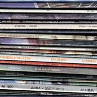

| Artist: | Domenico Solazzo |
| Title: | Excursus |
| Label: | LAP 0402 |
| Length(s): | minutes |
| Year(s) of release: | 2004 |
| Month of review: | [08/2005] |
| 1) | Error A | 3.35 |
| 2) | Don't | 3.45 |
| 3) | Bandwagon | 2.58 |
| 4) | Help Them! | 2.04 |
| 5) | Genecide | 3.39 |
| 6) | The Evil Dwarf | 1.58 |
| 7) | High Hat | 3.44 |
| 8) | Angry Woman | 2.48 |
| 9) | Michael Pig | 3.42 |
| 10) | Spin Through Tug | 3.20 |
| 11) | King Crap's Son | 3.40 |
| 12) | Smegma | 2.40 |
| 13) | Are Krishna Fanfare | 2.38 |
| 14) | Blue Semen | 3.27 |
| 15) | Sal Bananas Samosa | 2.00 |
| 16) | Sweet Engine | 3.03 |
| 17) | From The Grave Degenerates | 3.39 |
| 18) | Temperate Climate | 2.15 |
| 19) | Of Course | 3.06 |
| 20) | The Girl From The Bus Says | 2.00 |
Bandwagon has vocal passages by Robert Wyatt, while the music itself is quite orchestral which does not seem a likely combination to me. So I assume Solazzo came up with this himself. The guitar is at first soloish, later he becomes more jazzrockish. The organs right after are very much in Canterbury style. With Help Them! we get a bit of quiet. Piano, slow rumbling percussion. Greg Lake can be heard on this one, and the keyboards are in Emerson style, although in a somewhat harried style.
In Genecide it is now obvious what we shall encounter: Genesis. Pieces of mellotron dominate, pieces of the Lamb reverberate. Half fun discovering the pieces, as we run through the band's history. The Evil Dwarf opens with awkward disjointed synths and a run of horns. This is Gentle Giant territory.
High Hat is a moody piece, sounding like many other experimental RIOish pieces. I get the impression of hearing Robert Wyatt again, but it all remains a bit vague. But wait, this must be Gong. A repetitive piece. Angry Woman at first reminded me of Steve Hackett, but then the title does not make sense. It is likely to be something on the jazzrock side of things. The same holds for Michael Pig, which also features quite a bit of rootin and tootin. It seems the Canterbury side of things is quite dominant on this album. We have a female vocalist here, but I don't think it is Curved Air and certainly not Renaissance. More likely to be Dagmar Krause.
Spin Through Tug has flute and like so many other tracks very prominent percussion. The vocals of Ian Anderson can't be missed either. King Crap's Son takes us to the dark universe of King Crimson. Smegma is chaos, mainly. The overall feel is percussive, and it has some shouted vocals which sound a bit German. Magma then?
Music can be quite harrowing as witnessed by Smegma and its follow up, Are Krishna Fanfare with furious guitar playing. However, this piece does have its softer side. Blue Semen has a strong bass presence, and an airy atmosphere. After this Pink Floyd inspired piece of work we move to Sal Bananas Samosa. It does have a certain Carribean feel, this one. Some Fender Rhodes, chaotic percussion and high processed vocals.
Sweet Engine does seem like an engine running wild, thundering through the landscape. Very repetitive. From The Grave Degenerates is of course Van der Graaf Generator, with the necessary dark organ, Hammill 's typical vocals, and overall gloomy feel.
Temperate Climate might well be Weather Report. Of Course is Yes of course, and with Jon Anderson and consorts sped up, well you can imagine what comes out (and have nightmares). My first guess for The Girl From The Bus Says is Caravan, but that is because of the Golf Girl association. But that is very unlikely in view of the music.